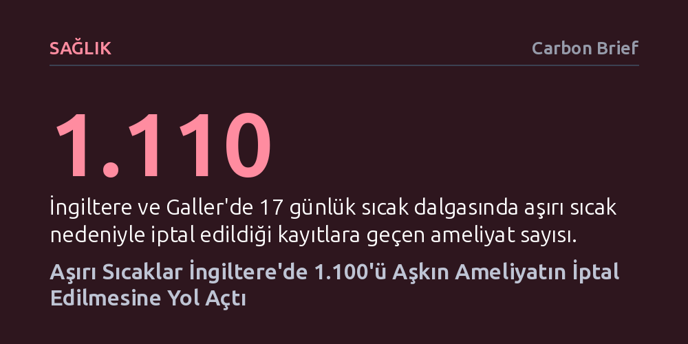

SAGLIK · Carbon Brief · 2026-09-12
İngiltere'de 2026 yazındaki rekor sıcak dalgaları sırasında ameliyathanelerdeki soğutma yetersizliği nedeniyle 1.100'den fazla ameliyat iptal edildi. İptaller arasında kalp, kanser ve acil cerrahiler bulunurken, eksik kayıtlar nedeniyle gerçek tablonun çok daha vahim olduğu vurgulanıyor.
İklim krizinin ve aşırı sıcakların yalnızca açık alandaki yaşamı değil, hastane ameliyathaneleri gibi en kritik kapalı kamu altyapılarını bile doğrudan işlemez hale getirdiğini gösteriyor.

İngiltere'de 2026 yılının Mayıs ve Haziran aylarında yaşanan rekor sıcak dalgaları, iklim krizinin sağlık sistemine etkisini bugüne kadar görülmemiş bir boyutta gözler önüne serdi. Carbon Brief tarafından yürütülen kapsamlı araştırma, yalnızca 17 günlük aşırı sıcak periyodunda kamu hastanelerinde 1.100'den fazla cerrahi müdahalenin doğrudan aşırı sıcaklar yüzünden iptal edildiğini ortaya koydu. Ülkenin güney bölgelerinde hava sıcaklıklarının 36 dereceye yaklaşmasıyla birlikte hastaneler, planlı ameliyatları durdurmak ve hatta bazı vakalarda başlamış operasyonları yarıda kesmek zorunda kaldı.
İptal edilen operasyonlar yalnızca ertelenebilir rutin işlemlerle sınırlı kalmadı. Diz ve kalça protezi gibi 167 ortopedi ameliyatının yanı sıra göz, jinekoloji, üroloji ve cilt kanseri cerrahileri de sıcak krizine takıldı. Daha da vahimi, hayati tehlike içeren en az 10 acil ameliyatın aşırı sıcak ameliyathaneler nedeniyle yapılamaması ve 18 cerrahi müdahalenin operasyonun ortasında terk edilmesi, krizin doğrudan hasta güvenliğini ve yaşamını tehdit eden bir boyuta ulaştığını gösterdi.
Bir hastane ameliyathanesi sıradan bir kapalı mekân değil; havadaki mikropları seyreltmek, anestezi gazlarını tahliye etmek ve ortam ısısı ile nemini katı standartlarda tutmak üzere tasarlanmış karmaşık bir mühendislik sistemidir. Dışarıdaki hava sıcaklığı aşırı derecede yükseldiğinde, eskiyen havalandırma ve iklimlendirme üniteleri gereken serinliği ve nem dengesini koruyamıyor. Yüksek nem oranı, cerrahi aletlerin üzerinde yoğunlaşma ve su damlacıkları oluşturarak enfeksiyon riskini katbekat artırıyor. Bu ortamda cerrahi güvenlik zinciri tamamen kırılıyor.
Sorun sadece mikrobiyolojik risklerle de sınırlı kalmıyor; ameliyatta kullanılan malzemeler ve ilaçlar da belirli sıcaklık aralıklarına bağımlı çalışıyor. Örneğin ortopedi ameliyatlarında protezi kemiğe sabitleyen özel kemik çimentosu, sıcak ortamda beklenenden çok daha hızlı donarak cerrahın hareket alanını yok ediyor. Bunun üzerine, ameliyat boyunca kurşun önlükler ve ağır koruyucu ekipmanlar içinde saatlerce çalışmak zorunda kalan cerrahi personelin yaşadığı aşırı ısınma ve dikkat kaybı da eklenince operasyonları iptal etmekten başka güvenli bir seçenek kalmıyor.
Carbon Brief'in bilgi edinme hakkı kapsamında İngiltere ve Galler'deki cerrahi birimi bulunan 140 sağlık tröstüne yaptığı resmi başvurular, sorunun boyutunun kayıtlara geçenden çok daha derin olduğunu gösteriyor. Başvuru yapılan kurumların yarısından azı sıcaklık kaynaklı iptal verilerini paylaşabildi. Geriye kalan tröstlerin büyük bölümü ise sıcağın bir sorun olmadığını söylemek yerine, ameliyat iptallerinde sıcaklık faktörünü ayrı bir veri kalemi olarak kaydetmediklerini veya arızaları yalnızca genel bir ekipman yetersizliği başlığı altında topladıklarını ifade etti.
Bu durum, ulaşılan 1.110 iptal rakamının aslında buzdağının yalnızca görünen kısmı olduğunu kanıtlıyor. Eksiksiz veri sunan tröstlerde incelenen dönemdeki tüm ameliyat iptallerinin yaklaşık yüzde 7'sinin doğrudan sıcak kaynaklı olması, mevsimsel bir hava olayının mevcut personel açığı ve yatak yetersizliğiyle boğuşan sağlık sistemine nasıl ağır bir darbe vurduğunu belgeliyor.
İngiltere Ulusal Sağlık Sistemi binalarının önemli bir kısmı geçen yüzyıldan kalma ve günümüzün aşırı hava dalgalarıyla başa çıkabilecek yalıtım ya da soğutma altyapısından yoksun. Uzun yıllara dayanan yetersiz kamu yatırımları, hastaneleri yıpranmış binalar ve yetersiz iklimlendirme sistemleriyle baş başa bıraktı. Sağlık Bakanı Yvette Cooper'ın da vurguladığı üzere, kamu otoritesinin "yaz aylarındaki sıcaklık baskılarına da tıpkı kış baskılarına hazırlandığı gibi hazırlanması" zorunlu hale geldi.
Hükümet hastane soğutma ve havalandırma sistemlerinin güçlendirilmesi amacıyla 32 milyon sterlinlik bir acil fon ayırdığını duyursa da, bağımsız iklim komiteleri 2035 yılına kadar tüm sağlık tesislerinin güvenli sıcaklıkları koruyabilecek kalıcı bir dönüşümden geçmesi gerektiğini belirtiyor. İklim krizinin etkileri sıklaştıkça, hastane altyapısını modernize etmemenin bedeli ertelenen tedaviler ve riske atılan hayatlar olarak ödeniyor.